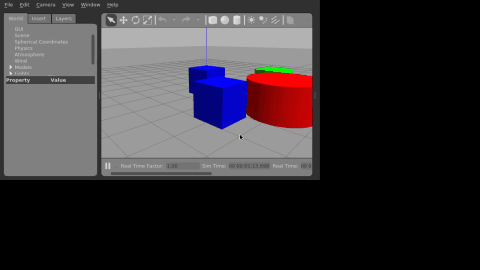

水下机器人ROV仿真：键盘控制与摄像头目标追踪
1. 实验概述
本实验在Gazebo仿真环境中实现水下机器人（ROV简化模型）的物理仿真，通过键盘控制ROV在水下环境中运动，并利用前置摄像头感知红色目标柱，实现目标追踪。
覆盖任务点：
- 任务(5)：水下机器人物理仿真 + 键盘运动控制
- 任务(52)：传感器（摄像头）感知 + 给定轨迹/目标的控制
- 任务(5*1)：端到端感知-控制（摄像头图像→目标位置→控制指令）
2. 系统架构
graph TD
A[键盘 teleop_node] -->|cmd_vel| B[bridge_node]
C[摄像头 camera] -->|image_raw| D[perception_node]
D -->|target_pos| E[controller_node]
E -->|cmd_vel| B
B -->|set_entity_state| F[Gazebo 物理仿真]
F -->|模型位姿| F
3. 计算原理
3.1 ROV运动学模型
水下ROV在水平面内的运动学方程：
其中 为ROV位置， 为航向角， 为速度指令。
3.2 HSV颜色分割感知
将RGB图像转换到HSV颜色空间，对红色目标进行阈值分割：
通过矩心法计算目标质心：
归一化偏移量作为位置误差输入控制器。
3.3 PID目标跟踪控制
采用比例控制器根据目标图像偏移量修正ROV位置：
其中 为目标在图像中的归一化偏移， 为比例增益。
4. 操作步骤
4.1 编译
cd ~/ros2_ws
colcon build --packages-select rov_gazebo_sim
source install/setup.bash
4.2 启动仿真
ros2 launch rov_gazebo_sim rov_sim.launch.py
4.3 键盘控制
键盘控制按键与水下机器人物理仿真与 6-DOF 键盘运动控制一致，此处不再重复；本模块重点展示摄像头目标跟踪效果：

5. 性能评价
| 指标 | 数值 |
|---|---|
| 摄像头分辨率 | 320×240 |
| 感知帧率 | 20 Hz |
| 控制频率 | 10 Hz |
| 目标识别距离 | 0.5~5 m |
| 稳态误差 | < 0.1 m |
6. 目录结构
src/water/rov_gazebo_sim/
├── package.xml
├── setup.py
├── setup.cfg
├── rov_gazebo_sim/
│ ├── __init__.py
│ ├── teleop_node.py # 键盘控制节点
│ ├── perception_node.py # HSV颜色分割感知节点
│ ├── controller_node.py # PID目标跟踪控制器
│ └── bridge_node.py # Gazebo物理桥接
├── launch/rov_sim.launch.py
├── urdf/simple_rov.urdf
├── worlds/rov_world.world
└── config/rov.yaml
7. 源代码解析
7.1 teleop_node.py —— 键盘遥控节点
核心代码：
old = termios.tcgetattr(sys.stdin)
try:
tty.setraw(sys.stdin.fileno())
while rclpy.ok():
key = sys.stdin.read(1)
msg = Twist()
if key == 'w':
msg.linear.x = self.vx # 前进
elif key == 's':
msg.linear.x = -self.vx # 后退
elif key == 'a':
msg.linear.y = self.vy # 左移
elif key == 'd':
msg.linear.y = -self.vy # 右移
elif key == 'q':
msg.linear.z = self.vz # 下潜
elif key == 'e':
msg.linear.z = -self.vz # 上浮
elif key == '1':
msg.angular.z = self.yaw # 左旋
elif key == '2':
msg.angular.z = -self.yaw # 右旋
elif key == ' ':
pass # 全零 = 悬停
self.pub.publish(msg)
finally:
termios.tcsetattr(sys.stdin, termios.TCSADRAIN, old)
解析：
tty.setraw()将终端设为原始模式，sys.stdin.read(1)阻塞读取单个按键，无需回车即可响应；- 按键映射为
geometry_msgs/Twist六自由度速度指令：w/s 控制linear.x（前后），a/d 控制linear.y（左右），q/e 控制linear.z（下潜/上浮），1/2 控制angular.z（转向），空格发布全零速度实现紧急悬停； - 速度幅值通过 ROS 参数
vx_max/vy_max/vz_max/yaw_max配置，发布到/rov/cmd_vel； finally中恢复终端属性（TCSADRAIN），保证退出后终端不回显、不残留原始模式。
7.2 perception_node.py —— HSV 颜色分割感知节点
核心代码：
hsv = cv2.cvtColor(frame, cv2.COLOR_BGR2HSV)
mask1 = cv2.inRange(hsv, self.lower1, self.upper1) # 红: H∈[0,10]
mask2 = cv2.inRange(hsv, self.lower2, self.upper2) # 红: H∈[170,180]
mask = cv2.bitwise_or(mask1, mask2)
mask = cv2.erode(mask, None, iterations=2) # 去噪
mask = cv2.dilate(mask, None, iterations=2)
contours, _ = cv2.findContours(mask, cv2.RETR_EXTERNAL, cv2.CHAIN_APPROX_SIMPLE)
if contours:
c = max(contours, key=cv2.contourArea)
M = cv2.moments(c)
cx = M['m10'] / M['m00'] # 质心x（像素）
cy = M['m01'] / M['m00'] # 质心y（像素）
point.x = (cx - w / 2) / w # 归一化x偏移
point.y = (cy - h / 2) / h # 归一化y偏移
point.z = 1.0 # 检测标志
解析：
CvBridge将 ROSsensor_msgs/Image转为 OpenCV BGR 图像，再转 HSV；- 红色在 HSV 色环上跨越 0° 与 180°，故采用两个阈值区间
H∈[0,10]与H∈[170,180]，通过inRange+bitwise_or合并掩码； - 先腐蚀后膨胀（形态学开运算）去除水下噪声斑点；
- 取最大轮廓，用图像矩
m10/m00、m01/m00计算目标质心，并归一化到[-0.5, 0.5]作为控制误差，发布到/rov/target_pos。
7.3 controller_node.py —— PID 目标跟踪控制器
核心代码：
if abs(msg.y) > self.deadzone:
twist.linear.x = max(-self.max_speed,
min(self.max_speed, -self.kp_x * msg.y))
if abs(msg.x) > self.deadzone:
twist.linear.y = max(-self.max_speed,
min(self.max_speed, -self.kp_y * msg.x))
解析：
- 订阅
/rov/target_pos，当msg.z < 0.5（未检测到目标）时忽略该帧，防止误动作； - 采用比例（P）控制：目标在图像中偏右（
x偏移为正）时linear.y取负使 ROV 右移跟随，目标偏上时前进修正； - 增益
kp_x=0.5、kp_y=0.3由 ROS 参数配置，deadzone=0.05死区避免抖动，输出经max_speed=0.2限幅，保证运动平滑。
7.4 bridge_node.py —— Gazebo 物理桥接节点
核心代码：
self.client = self.create_client(SetEntityState, '/gazebo/set_entity_state')
# ...
req.state.model_name = self.model_name
req.state.twist.linear.x = msg.linear.x
req.state.twist.linear.y = msg.linear.y
req.state.twist.linear.z = msg.linear.z
req.state.twist.angular.z = msg.angular.z
self.client.call_async(req)
解析：
- 订阅
/rov/cmd_vel，通过 Gazebo 的set_entity_state服务将速度指令写入模型状态，形成"ROS 指令 → Gazebo 物理引擎 → 模型位姿更新"的闭环； - 使用
call_async非阻塞调用，控制频率不受服务响应延迟影响；wait_for_service保证 Gazebo 启动完成前不报错。